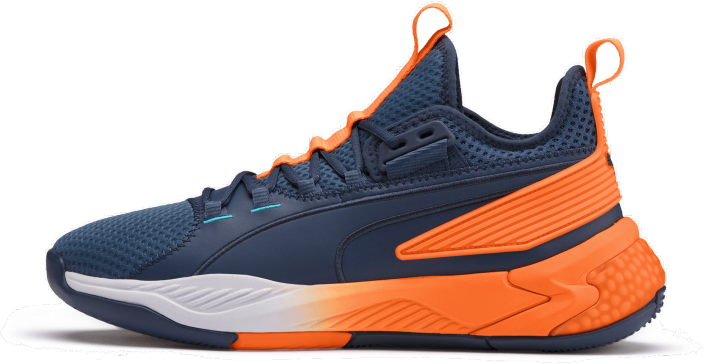

NIKE
The world's largest athletic apparel company, Nike is best known for its footwear, apparel, and equipment. Founded in 1964 as Blue Ribbon Sports, the company became Nike in 1971 after the Greek goddess of victory. One of the most valuable brands among sport businesses, Nike employs over 76,000 people worldwide.
Nike Air Max 270
The Nike Air Max 270 combines the exaggerated tongue from the Air Max 180 and classic elements from the Air Max 93. It features Nike's biggest heel Air unit yet for a soft ride that feels as impossible as it looks.
Colour: Black/Black
Price: 10,000
Available: Yes!
Size: UK 9, UK 9.5, UK 10, UK 11, UK 12
Air Jordan 1 Retro High OG
his iteration of the AJ1 re-imagines Mike's first signature model with a fresh mix of colours. Premium materials, soft cushioning and a padded ankle collar offer total support and celebrate the shoe that started it all.
Colour: White/Black/Grey
Price: 15,000
Available: Yes!
Size: UK 9, UK 9.5, UK 10, UK 11, UK 12
Air Jordan 6 Retro
MJ's sixth signature shoe debuted during the 1990–1991 season as His Airness battled rivals in pursuit of an elusive first championship.Now, it's back in a variety of colour schemes.Gear up for the 30th anniversary of the Air Jordan 6 with this timeless classic.
Colour: White/Red
Price: 20,000
Available: Yes!
Size: UK 9, UK 9.5, UK 10, UK 11, UK 12
Nike Dunk SB
This is one of the many examples of the power of skateboarding. The Dunk is a shoe that finds its place on the basketball court. It quickly becomes a common sight in collegiate hoops thanks to a few details. A durable leather upper and array of color combos are the primarily attractive features here.
Colour: Blue/Brown
Price: 12,000
Available: No!
Size: UK 9, UK 9.5, UK 10, UK 11, UK 12
ADIDAS
Innovation and quality doesn’t always go hand in hand, but with Adidas, one doesn’t make sense without the other. Adidas’ motto, “We strive to help you perform your best,” is plainly shown in the quality of their shoes.
Adidas NMD_R1
When high-performance trainers meets some style updates – that’s what the Adidas NMD_R1 is all about. First up, Adidas’ minimalist design is best seen in this pair of shoes, with some great subtle enhancements that will make any sneakerhead smile. But more than its looks, the Adidas NMD_R1 is actually a really comfy shoe that performs really well.
Colour: Black/White
Price: 5,000
Available: Yes!
Size: UK 9, UK 9.5, UK 10, UK 11, UK 12
Adidas Alpha bounce+
Running just got real lighter with the Adidas Alphabounce+. The latest model out of this impressive Adidas line of footwear integrates an innovative use of mesh technology. Designed to let air flow smoothly (without losing out on overall foot protection), each run is now light as a feather. As a support shoe, the Adidas Alphabounce+ performs excellently as well.
Colour: Black/White/Blue
Size: UK 9, UK 9.5, UK 10, UK 11, UK 12
Price: 8,000
Available: Yes!
Adidas Harden Vol. 4
Fear the beard! You know that Adidas made a really outstanding basketball shoe, if it’s able to meet probably one of the best pointers ever in the NBA, James Harden’s standards! Knowing how this player moves, Adidas integrated the use of lightweight cushioning to help Harden breeze on by rivals. Also, this shoe’s traction is specifically designed the way Harden moves, maximizing all potential on the court.
Colour: Black/White/Purple
Price: 3,000
Available: Yes!
Size: UK 9, UK 9.5, UK 10, UK 11, UK 12

Adidas OZWEEGO TR
Easy does it with this 1990’s inspired shoes, the Adidas OZWEEGO TR. As part of the revamp of the chunky shoes look, this footwear makes sure to only focus on the good stuff on this unique kind of look. Putting the emphasis on different kinds of layers, this shoe has a mesh upper (fashioned like a sock) which places the attention towards the TPU and suede overlays.
Colour: Black/Red/Grey
Price: 10,000
Available: Yes!
Size: UK 9, UK 9.5, UK 10, UK 11, UK 12
PUMA
PUMA is joyful, athletic, performance merging sports and fashion to create a community for people with an active lifestyle. PUMA is fun and playful, passionate and colourful according to its red image. PUMA is both feminine and masculine, though its perception leans towards masculinity.
Puma Clyde Hardwood
Engineered for the court, with swagger for the street. The Clyde Court is our step back onto the court and our stamp on culture.
Colour: Black/White
Price: 8,000
Available: Yes!
Size: UK 9, UK 9.5, UK 10, UK 11, UK 12
Puma Uproar
It’s always a good look spinning some classics from time to time. It’s why we’re bringing you the Uproar in classic, timeless colorways. They’re a nod to the design and culture of the 90s remixed with modern PUMA Hoops tech. So, can you kick it? Yes, you can. Just don’t flinch while you do.Future and retro collide in our Futro designs. We’ve stripped down shoes from our archives and rebuilt them to create future icons – grounded in history, and evolved for a new world.
Colour: Black/White/Orange
Price: 7,000
Available: Yes!
Size: UK 9, UK 9.5, UK 10, UK 11, UK 12

Puma Rs 0 Dr - Sonic
PUMA’s Running System (RS) line has undergone numerous makeovers since it hit the market in the '80s, with each iteration incorporating the latest style and performance-boosting trends. But one thing has always remained at the collection’s core: its unparalleled cushioning technology, which has made it a staple among the running community.
Colour: Black/Red
Price: 13,000
Available: Yes!
Size: UK 9, UK 9.5, UK 10, UK 11, UK 12
Rihanna X Puma Fenty Avid
Part of the Puma x Fenty Rihanna Collection, the Avid is a sneaker with a lot of style. They are crafted cut-outs and feature a mesh and nylon upper, toggle lacing system, and pull tabs.
Colour: Black/White/Grey
Price: 15,000
Available: No!
Size: UK 9, UK 9.5, UK 10, UK 11, UK 12
NEW BALANCE
New Balance is one of the world's major sports footwear and apparel manufacturers. New Balance claims to differentiate their products with technical features, such as blended gel inserts, heel counters and a greater selection of sizes, particularly for very narrow or very wide widths.
New Balance Hanzo S
The Hanzo S is a racing flat with a 4mm heel differential. It is ideally suited for 5Ks and marathons. The shoe has a really minimalist feel, is quite aggressive, and is very responsive. It also brings a really good wraparound fit and security that should be needed when trying to lower personal best times.
Colour: Black/Green
Price: 800
Available: Yes!
Size: UK 9, UK 9.5, UK 10, UK 11, UK 12
Fresh Foam Arishi v3
The New Balance Fresh Foam Arishi v3 is a lightweight running shoe that aims to provide an efficient and ultra-cushioned ride. This neutral running shoe is suitable for runners seeking for comfort, protection, and flexibility. It is ideal for walking, running, and workout sessions.
Colour: Black/Blue
Price: 2000
Available: No!
Size: UK 9, UK 9.5, UK 10, UK 11, UK 12
Kawhi 1 Leonard White
Kawhi Leonard's first real signature shoe provides good traction on indoor and outdoor courts, but you will need to wipe regularly on dusty courts. The Fuel Cell cushion setup is very similar to the OMN1S, but with caging in the heel. Overall this setup is very responsive and bouncy with a lot of court feel, but the heel is a little firm. The materials are decent, but considering the premium price, they could have been better.
Colour: White
Price: 500
Available: Yes!
Size: UK 9, UK 9.5, UK 10, UK 11, UK 12
Fresh Foam X Tempo v2
The New Balance Fresh Foam Tempo X v2 energizes your runs, workouts and everything in between. Constructed with the softest Fresh Foam X midsole to date, these neutral shoes deliver plush comfort with a touch of support. Prepare for soft and flexible landings with excellent ground feedback from every stride. Slide into the stretchy and supportive HYPOKNIT upper and look good no matter what you're doing.
Colour: White/Green/Yellow
Price: 1,200
Available: Yes!
Size: UK 9, UK 9.5, UK 10, UK 11, UK 12